Git Mastery in 1 Hour
- Overview
- Prerequisites
- First Steps
- Some Internals
- Branches
- Undo
- Merging
- Remote (Bare) Git Repository
- Collaboration
- Go Forth!
- GitHub and BitBucket
Enter your own first-commit ID:
(Enter to submit; Escape to cancel)
Enter your own second-commit ID:
(Enter to submit; Escape to cancel)
Enter your own third-commit ID:
(Enter to submit; Escape to cancel)
Enter your own to-lose-commit ID:
(Enter to submit; Escape to cancel)
Enter your own detached-commit ID:
(Enter to submit; Escape to cancel)
Enter your own amended-commit ID:
(Enter to submit; Escape to cancel)
Enter your own first-tree ID:
(Enter to submit; Escape to cancel)
Enter your own second-tree ID:
(Enter to submit; Escape to cancel)
Enter your own folder-A-tree ID:
(Enter to submit; Escape to cancel)
Enter your own folder-B-tree ID:
(Enter to submit; Escape to cancel)
Enter your own file-B-blob ID:
(Enter to submit; Escape to cancel)
Enter your own leapfrog-one-commit ID:
(Enter to submit; Escape to cancel)
Enter your own leapfrog-two-commit ID:
(Enter to submit; Escape to cancel)
Enter your own merge-commit ID:
(Enter to submit; Escape to cancel)
Enter your own work-A-commit ID:
(Enter to submit; Escape to cancel)
Enter your own work-A-merge-commit ID:
(Enter to submit; Escape to cancel)
Enter your own work-B-commit ID:
(Enter to submit; Escape to cancel)
Overview
This Git lesson focuses on giving you a firm grasp of key Git concepts. Concept mastery makes you an expert. You should leave the “how” to search engines (like Google). Knowing how to cut wood doesn’t make you a carpenter!
This Git lesson brings you through a typical workflow with Git, consisting 3 areas.
- Local clone
- Remote operations
- Collaboration techniques
Git is primarily a collaboration tool.
Even if you only use Git on your own, bear in mind that version control is necessary for you to “collaborate with yourself”. We typically go through a decent length project often asking questions like “why did I do that last month?”, “what was I thinking when I made this decision?”, “what if I take a new fangled approach I just learned?”, and so on.
This Git lesson is written to be as trim as possible. You can safely ignore side notes like this:
But you should especially note important tips like this:
Grasp concepts first, lookup technical details later. Learning before working, looking before leaping!
Important tips are places where you should pause and grasp the concepts just demonstrated.
Shoot me an email if any part of this lesson bogs you down and impedes you from progressing rapidly.
However, you should look out for fast-forward suggestions like this:
The last paragraph of this section mentions “how to create Git branch”. Gloss over that quickly; Git branches will be explored in detail later.
Lastly, you must execute shell (Bash) commands presented like this: ls -la (inline). And like this:
cd ~/Document # This is a comment you don't type in
ls -la # Comments do nothing, even if you type them inIn short, read and understand the concepts explained. The explanation is mostly demonstrated rather than described abstractly. Follow the demonstrations by executing commands that are styled as mentioned above.
Before we start, let’s remind ourselves that “concepts matter most”. There will be no in-depth treatment of “how” to do stuff; you can google “how to create Git branch” and easily find git branch <name> <ref>. The focus of this Git lesson is on concepts (what) and rationale (why).
Prerequisites
This Git lesson is taught using a *nix platform (eg Linux, MacOS), in particular Bash.
If you’re on Linux or MacOS, you’re a productive and efficient coder, and you should expect to blaze through this Git lesson in less than an hour.
If you’re on Windows, you can install Git for Windows, and use Git Bash. Meantime, keep bugging Jon to complete his “Crash Course for Productivity on Linux/MacOS”.
First Steps
We will start by creating our first Git commit. There will be a few first steps to do before we achieve that.
Local Git Repository
A Git repo (short for repository) contains:
- A copy of the files that you’re working on (aka working copy)
- The history of your work on said files.
You start a local Git repo like this:
cd ~/Documents # Keep all your work in your own folder.
mkdir my-new-project # This folder will contain the files for your new project.
cd my-new-project # Enter the folder you created above.
git init # Start the Git repo in this folder.A Git repo tracks a folder of files, so the said files are really the files in that folder.
A Git repo resides in a folder, and can potentially (and usually does) track all files in that folder.
That means you really shouldn’t git init in a top-level folder like ~/Documents or /usr/local! You want to track the progress of your projects, not every single file in your computer.
The .git Folder
ls -la will show you the .git folder that was created when you started a new Git repo. This hidden folder contains Git data — data regarding the history of your work, data about your credential, and other stuff we want to ignore for now.
The .git folder is what defines your Git repo.
We’re now interested in .git/config, where your credential is stored. The content of that file (do cat .git/config) should currently be (with some omissions):
[core]
filemode = true # false if you're on Windows
bare = false
...Let’s input a credential for you now, using fictitious, but important, values. Follow along, please!
git config user.name "Author A"
git config user.email a@c.comNow, these new lines will have been inserted into .git/config. Doing cat .git/config shows:
[user]
name = Author A
email = a@c.comAs you would intuitively perceive, you can have different credentials for different projects. A typical use case would be having one credential for work (eg, user_id@sutd.edu.sg) and another for personal projects (eg, user_id@gmail.com).
Manually editing that config file is possible and equivalent to performing git config.
If there is a credential you almost always use, you can put it in the global Git config at ~/.gitconfig via a command like git config --global user.name "Author A".
Local Git config parameters override global ones.
Working Copy
Create file story.txt (eg. emacs story.txt), and enter into it these 3 lines:
1
2
3
Once upon a time, there was a unicorn.
The unicorn looked around.Your text editor may insert a 4th line — a blank line — at the end of story.txt. The historical reasons for that stem from C Standards for non-empty files, from Posix’s definition of Line, and various other sources related to software’s ability to process instructions in text files. In this Git lesson, we don’t care about any of that; our story.txt is a story, not computer instructions. Just be consistent in the way you write your files, ending new-line or no.
Everything outside of the .git folder is a working copy of the files you are working on for the project.
That is, with the exception of untracked files and ignored files, which we will explore later on.
Git Status — Change Summary
git status shows a summary of the changes you’ve made since the last commit.
There is no last commit as of right now. But the phrase “since the last commit” will become clearer later on.
git status will show this:
On branch master
Initial commit
Untracked files:
(use "git add <file>..." to include in what will be committed)
story.txt
nothing added to commit but untracked files present (use "git add" to track)
You have added a new file to your Git repo. New files — files not yet tracked by your Git repo — are called untracked files.
Ignore all other information in that output for now.
We’ll follow Git’s advice and work towards adding our new file to the Git repo.
git status is a command you will use very often:
- Before you start work on a new set of changes (initial check)
- In the process of staging files (progress check)
- Before you commit changes (final check)
- Whenever in doubt, and so on.
Staging Area
When telling Git to commit your new work, Git only commits what you place in the staging area.
git add story.txt will put story.txt into the staging area, and a subsequent git status will show:
On branch master
Initial commit
Changes to be committed:
(use "git rm --cached <file>..." to unstage)
story.txt
You can unstage work using git rm --cached <file>. Feel free to practice unstaging the staged work and re-staging that work.
The staging area allows you to work on multiple ideas rapidly — as and when they come to mind — but yet still be able to organize your changes into coherent and integral units.
To demonstrate the purpose of having a staging area, create a new file rough_thoughts.txt (eg. emacs rough_thoughts.txt) and enter this line:
Random disorganized thoughts. Don't want to git-track this.git status will now show:
On branch master
Initial commit
Changes to be committed:
(use "git rm --cached <file>..." to unstage)
story.txt
Untracked files:
(use "git add <file>..." to include in what will be committed)
rough_thoughts.txt
In the above demonstration, you might have some new ideas you want to quickly write down in rough_thoughts.txt before you forget those ideas. Yet, you might not want those underdeveloped new ideas to be committed in your next set of changes.
Committing Your Work
You can use any text editor to create file .git/COMMIT_EDITMSG (eg. emacs .git/COMMIT_EDITMSG). Enter into it these 5 lines:
Adds first work on the story
I'd think up more descriptive information here if I could.
That first line above should be a short summary, with no ending period.
Then comes a blank line, and then details and descriptions follow.The file .git/COMMIT_EDITMSG is the only file you will ever create in folder .git. Git actually creates that file itself under certain circumstances.
You then commit your work by doing git commit -F .git/COMMIT_EDITMSG.
If you want to use Emacs as a commit message editor, you can configure Git to use Emacs. Do the configuration with git config --global core.editor emacs. The default editor is vi. You can then verify your editor configuration in ~/.gitconfig. That file can also be edited by hand.
You can then do just git commit -v and see your chosen text editor pop up, enter your commit message, save like you’re saving a file (you’re actually saving .git/COMMIT_EDITMSG), and finally exit the text editor. That sequence of actions will commit your changes.
It is usually better to collect your thoughts in a file when you construct your commit message. The -F option lets you specify a file that contains your commit message.
Git Log — A Timeline
git log --decorate --graph will show your first commit. Later on when you have more commits, git log will show a connected graph (timeline) of all your commits. Right now, you only have 1 commit:
* commit 2b5519936865f3b841b5f7aad46dcd0cf0e86ceb (HEAD -> master)
Author: Author A <a@c.com>
Date: Mon Dec 12 04:31:24 2016 +0800
Adds first work on the story
I'd think up more descriptive information here if I could.
That first line above should be a short summary, with no ending period.
Then comes a blank line, and then whatever descriptive things I wanna say.
Click on the commit ID above to enter your own value. The rest of this lesson will follow suit. You can click on any commit ID anywhere and do the same edit.
Especially note the credential attached to that commit. Recall from a previous section where you configured your credential for this Git repo. This credential is what gets attached to every commit you make in this Git repo.
The git log option --decorate shows git branches/tags, concepts that will be explained later. The option --graph shows a visual representation (with connecting lines) of how commits connect and form, well, a graph. How commits connect to one another will also be explained later.
git log lets you see what was done before to decide what to do next. You’ll also often look at previous commit messages to guide you in creating new commit messages.
Navigating the Git Log
git log shows the log in a less window (navigation tips here), which coincidentally is navigated similarly to a vi window.
Turns out many *nix productivity tools are inter-related! Learn one, learn all! You’ll see vi-like navigation in less, and emacs-like navigation in bash.
Shorten the height of your bash terminal such that git log --decorate --graph output exceeds that height. The log will be displayed in a less window, and you can practice navigating in that window.
Some basic navigation tips:
j— move down one linek— move up one lineCtrl-f— move down one screenCtrl-b— move up one screenq— quitlessview
Some Internals
We start with Git objects, so that we can understand how Git commits are built and hence grasp what Git commits essentially are — snapshots of your project (all its folders and files).
Soon after that, we get a handle on some internals that are actually crucial to normal use of Git — some of Git’s vocabulary (or terminology).
Git Objects — Commits, Trees, Blobs
A Git Commit is collection of folders and files contained in that commit. In short, Git is really a tracker for a filesystem.
A Git Commit is a snapshot of all your project files at a particular time (the time you created that commit). And your project files are represented by a collection of folders and files, potentially involving nested folders.
That’s almost all you need to know about a Git Commit. Besides being a snapshot of all your project files, a Git Commit also has relations to other Git Commits.
Technically, under the hood, Git represents folders with trees and files with blobs.
Now, we shall see how a Git Commit is a snapshot and how it relates to other Git Commits.
Create a subfolder folder-A and a file file-A.txt inside:
mkdir folder-A
echo "This is file-A." > folder-A/file-A.txtCreate a subfolder folder-B inside folder-A, and files file-B.txt and file-C.txt inside:
mkdir folder-A/folder-B
echo "This is file-B." > folder-A/folder-B/file-B.txt
echo "This is file-C." > folder-A/folder-B/file-C.txtStage our new changes with git add folder-A.
The git add command accepts folders and files as inputs, the former being handled recursively.
Check our staging area with git status:
On branch master
Changes to be committed:
(use "git reset HEAD <file>..." to unstage)
new file: folder-A/file-A.txt
new file: folder-A/folder-B/file-B.txt
new file: folder-A/folder-B/file-C.txt
Untracked files:
(use "git add <file>..." to include in what will be committed)
rough_thoughts.txt
Assuming we don’t ever want to commit rough_thoughts.txt, it can be annoying to see Git constantly telling us that is an untracked file. Later on, we will learn how to tell Git to ignore certain folders and/or files.
We construct our commit message by editing .git/COMMIT_EDITMSG (eg. emacs .git/COMMIT_EDITMSG):
Adds nested folder structure
Just testing. We want to see Git Objects.
We should be seeing Commits, Trees and Blobs.And now, we commit with git commit -F .git/COMMIT_EDITMSG.
Git Object Identifier
A look at Git Log via git log --decorate --graph shows:
* commit 118a9ac701be36a849423e65f4ab2bebf75ddbfe (HEAD -> master)
| Author: Author A <a@c.com>
| Date: Mon Dec 12 04:33:47 2016 +0800
|
| Adds nested folder structure
|
| Just testing. We want to see Git Objects.
| We should be seeing Commits, Trees and Blobs.
|
* commit 2b5519936865f3b841b5f7aad46dcd0cf0e86ceb
Author: Author A <a@c.com>
Date: Mon Dec 12 04:31:24 2016 +0800
Adds first work on the story
I'd think up more descriptive information here if I could.
That first line above should be a short summary, with no ending period.
Then comes a blank line, and then details and descriptions follow.
Click on the Git Object IDs above to enter your own value. The rest of this lesson will follow suit. You can click on any Git Object IDs anywhere and do the same edit.
Think of these IDs as unique identifiers, each uniquely representing a Git object (commit, tree or blob).
These IDs are actually SHA-1 message digests.
Anatomy of a Commit
In the following instructions, replace my commit IDs with your own.
Let’s look at the second-commit via
git cat-file -p 118a9ac
1
2
3
4
5
6
7
8
9
tree 19a6f72ee10a50fa32d42edc5070f12f876414b7
parent 2b5519936865f3b841b5f7aad46dcd0cf0e86ceb
author Author A <a@c.com> 1481488427 +0800
committer Author A <a@c.com> 1481488427 +0800
Adds nested folder structure
Just testing. We want to see Git Objects.
We should be seeing Commits, Trees and Blobs.
Click on the Git Object IDs above, even the tree ID, to enter your own value. The rest of this lesson will follow suit. You can click on any Git Object IDs anywhere and do the same edit.
From the third line of that output, we see the commit message for our second-commit.
The second line indicates that our second-commit is linked to our first-commit (via the property parent).

New commits are added downstream. Swimming upstream brings you to earlier commits. The above example has commit C1 upsteam of commit C2.
We will learn later that commits are connected as Singly Linked Lists, but in reverse order; later commits link to earlier commits, and not vice versa. We will also learn that commits can have multiple parents, which is the mechanism by which we merge branches (timelines).
And to confirm that our second-commit really links to our first-commit, we take a peek at the first-commit by doing:
git cat-file -p 2b551991
2
3
4
5
6
7
8
9
tree 88dc468c538f956841dbd018e805ff2ba94248fb
author Author A <a@c.com> 1481488284 +0800
committer Author A <a@c.com> 1481488284 +0800
Adds first work on the story
I'd think up more descriptive information here if I could.
That first line above should be a short summary, with no ending period.
Then comes a blank line, and then details and descriptions follow.
Git objects tree and blob are only useful here for the concept exploration of commit. You won’t be bothering with tree or blob once we have taken apart the anatomy of a commit.
The first-tree and second-tree are 2 different snapshots, the first being taken by our first-commit and the second by our second-commit. Based on the folders and files we created so far, we know both trees look like:
first-tree
|
|-- story.txt
second-tree
|
|-- story.txt
|-- folder-A
|
|-- file-A.txt
|-- folder-B
|
|-- file-B.txt
|-- file-C.txtJust a little more down the rabbit hole…
Let’s confirm that our second-tree does indeed contain the hierarchy we conjectured above.
git cat-file -p 19a6f72
040000 tree 0ea6ae12ebb0a96b85d57edd8bd433deb08f663e folder-A
100644 blob 2a8621f3fe966d677330a471450bd54a539162a2 story.txt
Indeed, our second-tree has a tree (folder-A) and a blob (story.txt).
Chase that nested tree further down by:
git cat-file -p 0ea6ae1
100644 blob 0e82526a4ea4a0031220e1e872d2c6abab945ccb file-A.txt
040000 tree fac3336c78925507f50257e5124f57bcaa271732 folder-B
And further down by:
git cat-file -p fac3336
100644 blob e7086e266d1d5c77563cf27bbada6e4fddd30057 file-B.txt
100644 blob 8458d5e043e7546ff08a0292699a75536f87bcaa file-C.txt
And finally, a peek into a Blob Git object by:
git cat-file -p e7086e2This is file-B.To fully take stock of all the Git objects we currently have, find .git/objects -type f shows:
.git/objects/88/dc468c538f956841dbd018e805ff2ba94248fb
.git/objects/19/a6f72ee10a50fa32d42edc5070f12f876414b7
... and so on ...You can find your recorded commit IDs among the above output.
Note that the Git objects are likely organized into a hashtable, where the 1st 2 digits of the object ID is the bucket ID.
To check their types (Commit, Tree, Blob), you can do find .git/objects -type f | cut -d'/' -f3,4 | sed 's/\///' | xargs -I %ID -t git cat-file -t %ID.
Or simply do them 1 by 1: git cat-file -t <1st-7-digits-of-ID>.
A Git Commit has 3 components:
- Snapshot — of the project folders/files (Git Tree object)
- Parent(s) — 0 or more links to immediate parent(s) (Git Commit object)
- Commit Message — the commit message for itself (plain text)
You will notice that the Git Object ID for trees and blobs remain the same (same for yours and mine), but that for commits are different. We’ll look into commit IDs later on, when we explore commit amends.
A Commit ID takes into account the timestamp (time that the commit was created) of its commit. Hence, all commit IDs are different, even if the snapshot and commit message (author, committer and message) remain the same.
Git References
Git references allow us to refer to Git objects using labels (more human-friendly) rather than the Git object IDs.
The types of Git references are:
- Branch (local and remote)
- Tag
HEAD(special kind of reference, special semantics)
Branches, Tags and the HEAD will be explained in more detail later.
We currently have 1 branch — “master”. (git branch shows all branches)
This is actually a reference to our second-commit, as seen by git log --decorate --oneline master:
118a9ac (HEAD -> master) Adds nested folder structure
2b55199 Adds first work on the story
Confirm this by doing cat .git/refs/heads/master and also git branch -v. Note that the Git object ID is the same in both places:
118a9ac701be36a849423e65f4ab2bebf75ddbfe
* master 118a9ac Adds nested folder structure
Human-Friendlier GOIs
In the spirit of Git references, let’s make Git Object IDs more human-friendly too.
Git Object IDs is still not the right way to work in Git. Git references is the right way!
We set a parameter for git log like this: git config log.abbrevCommit true.
A subsequent git log --decorate --graph shows 7-character commit IDs:
* commit 118a9ac (HEAD -> master)
| Author: Author A <a@c.com>
| Date: Mon Dec 12 04:33:47 2016 +0800
|
| Adds nested folder structure
...
* commit 2b55199
Author: Author A <a@c.com>
Date: Mon Dec 12 04:31:24 2016 +0800
Adds first work on the story
...
If you ever need to see the full 40-character Git Object ID for your commits, just add option --no-abbrev like so: git log --decorate --graph --no-abbrev. That option goes nearly everywhere, such as git reflog --no-abbrev (reflog is explained later).
Since we’re on the topic of making things more human-friendly, you can explore Git Aliases. Here’s a quick example for an oft-used git log --decorate --graph: git config alias.lg "log --decorate --graph"
You can add option --global (like git config --global) if you want that alias for all your Git repos.
Now, try git lg. You’ll see that it is exactly equivalent to git log --decorate --graph.
Have fun making aliases for long and cumbersome Git commands!
Git Aliases can simplify complex Git commands. Saves you a lot of typing!
Swimming Upstream
The ~ operator takes in a number that tells Git how many commits you want to swim upstream relative to a Git reference. The result is the commit Git lands on after performing that operation.
git log --decorate --oneline master~1 shows us our first-commit, which is 1 step upstream of our second-commit:
2b55199 Adds first work on the storyThere is no way to swim downstream. Git commits do not have a property that is a counterpart to parent.
The HEAD
The HEAD is a special Git reference that refers to the current commit you’re on.
Your next new commit will have this current commit as its parent, and that new commit becomes the new current commit.
That is the definition, so to speak, of the HEAD. It concisely describes everything that the HEAD does (its function), besides what the HEAD is (a Git reference).
We will next look at how to manually move the HEAD.
Moving the HEAD
The HEAD is manually moved via a git checkout <ref | id> command, where ref can be any Git reference (branch or tag) and id is a Git object ID.
Quick tip on command specification format. Angle brackets (< >) denote required parameters, square brackets ([ ]) denote optional parameters. The vertical bar (|) denotes “or”. Therefore, the above spec means “you must include a ref (Git reference) or an id (Git object ID)”.
There are other ways of moving the HEAD, the most commonly seen of which is the advancement via a git commit. As per the definition of the HEAD, the HEAD is advanced to the newly created commit upon a git commit. This method of moving the HEAD is referred to as creating a commit, and is not a manual movement of the HEAD. We’ve seen this happen when we created our first-commit and second-commit.
We will explore other ways of moving the HEAD later. For now, we stick with the git checkout <ref | id> method, in particular git checkout <branch>.
The HEAD can have 3 states — attached, detached and initial.
Initial HEAD
When we created our Git repo via git init, these happened:
- The default branch master is readied (not yet created)
- The
HEADis attached to master. - The
HEADrefers to no commit (none exist yet) — an initial state.
This is the only time when the HEAD exists in that initial state.
A Git branch is conceptually a string of connected commits, and is technically just a Git reference (pointer). That’s all we need to know about branches for now.
The concept of branch will be explored in more detail later on.
We need to know nothing more of this initial state. We don’t work with this initial state.
As can be seen, the usual state of the HEAD is attached (to branch master by default). This is true even when the HEAD is in its initial state.
The usual state of the HEAD, during your normal use of Git, is that of being attached to a branch. We will explore this usual state next.
HEAD With Branch
This is the usual state of the HEAD, that of being attached to a branch.
When we created our first commit, the HEAD was advanced to our newly created first-commit. And similarly for second-commit.
Note that the branch to which the HEAD is attached is advanced similarly.
We can see that the HEAD is currently attached to branch master via git log --decorate --graph:
* commit 118a9ac (HEAD -> master)
| Author: Author A <a@c.com>
| Date: Mon Dec 12 04:33:47 2016 +0800
|
| Adds nested folder structure
...
An attached HEAD is shown with an arrow pointing to the branch it is attached to. Like this: HEAD -> branch-name
Detached HEAD
A detached HEAD is used to take a look-see at any commit, especially commits that are not at any branch head.
We will discuss branch head in detail later on.
Performing a checkout with a Git branch plus a ~ operator will lead to a detached HEAD.
In fact, performing a checkout with just the branch reference itself is the only way to attach HEAD.
To see a detached HEAD, we do a checkout via git checkout master~0, to which Git issues this warning:
Note: checking out 'master~0'.
You are in 'detached HEAD' state. You can look around, make experimental
changes and commit them, and you can discard any commits you make in this
state without impacting any branches by performing another checkout.
If you want to create a new branch to retain commits you create, you may
do so (now or later) by using -b with the checkout command again. Example:
git checkout -b <new-branch-name>
HEAD is now at 118a9ac... Adds first work on the story
We will discuss detached HEAD in more detail later, along with its typical use case and its common pitfalls. We will leave the above warning alone for now.
The subsequent git log --decorate shows that the HEAD is not attached to any branch:
* commit 118a9ac (HEAD, master)
| Author: Author A <a@c.com>
| Date: Mon Dec 12 04:33:47 2016 +0800
|
| Adds nested folder structure
...
Even though we’re still on the same commit that branch master is on, the HEAD is detached.
Checking out (switching to) a branch (git checkout <branch>) attaches the HEAD to the branch.
We re-attach the HEAD to branch master with git checkout master. Then, a git log --decorate --graph shows:
* commit 118a9ac (HEAD -> master)
| Author: Author A <a@c.com>
| Date: Mon Dec 12 04:33:47 2016 +0800
|
| Adds nested folder structure
...
Reflog
Git reflog is like an “Undo history” (recent history) for Git references. For example, the reflog for the HEAD shows the recent changes to the HEAD.
Reflogs only exist for branches and for the HEAD.
It is meaningless to have reflogs for tags, since tags do not (and are not meant to) move like branches and the HEAD do.
git reflog <branch> shows the reflog for branch <branch>
git reflog or git reflog HEAD shows the reflog for the HEAD
Omitting the Git reference in Git commands often means we mean to use HEAD for the reference parameter. Eg git log is equivalent to git log HEAD.
We will almost always be using reflog for the HEAD
Reflog for HEAD
git reflog or git reflog HEAD shows the reflog for the HEAD.
A Git reflog for the HEAD shows the recent changes to the HEAD.
- Advancement (upon a new commit) — denoted by commit
- Checkout — denoted by checkout
- Forced Movement (via
git reset --hard) — denoted by reset: moving
We will look at git reset later on.
So far, we have witnessed 2 types of HEAD change: commit and checkout. Let’s also witness them in the reflog for the HEAD.
A git reflog shows us these recent changes to the HEAD:
118a9ac HEAD@{0}: checkout: moving from 118a9ac701be36a849423e65f4ab2bebf75ddbfe to master
118a9ac HEAD@{1}: checkout: moving from master to master~0
118a9ac HEAD@{2}: commit: Adds nested folder structure
2b55199 HEAD@{3}: commit (initial): Adds first work on the story
Assuming you followed this Git lesson closely, your HEAD’s reflog should look exactly like the above.
Let’s recall our past actions and match them with the reflog above, from the earliest (HEAD@{3}) to the latest (HEAD@{0}).
In the Beginning
When we created our Git repo (git init), Git created a branch master. That branch is where the HEAD starts, where the HEAD is attached.
How did we arrive at HEAD@{3}?
2b55199 HEAD@{3}: commit (initial): Adds first work on the storyOur first actions were to:
- Create a new file
story.txtand enter some lines of text into it. - Stage our work on
story.txt(git add) - Commit our work (
git commit)
Yet, only the git commit action was recorded on the reflog. This gives us an important lesson:
Make commits often. Git is only responsible for tracking your work when you commit.
One of Agile’s first key paradigms is iterative and incremental — that is, commit your work often and in small pieces. What is work? Mistakes are work because they efficiently prune solution spaces. Eurekas are work because they are solutions themselves.
You will see that HEAD@{3} corresponds with your first-commit.
Explored Git Objects
How did we arrive at HEAD@{2}?
118a9ac HEAD@{2}: commit: Adds nested folder structureOur next action was a git commit that commited some nested folders and files in order to explore Git Objects. This corresponds with your second-commit.
Detached the HEAD
How did we arrive at HEAD@{1}?
118a9ac HEAD@{1}: checkout: moving from master to master~0We performed a checkout via git checkout master~0 to detach the HEAD. Since ~0 means “zero steps upstream of master”, the HEAD points to the same commit that master points to. This corresponds with our second-commit.
Attached the HEAD
How did we arrive at HEAD@{0}?
118a9ac HEAD@{0}: checkout: moving from 118a9ac701be36a849423e65f4ab2bebf75ddbfe to masterWe performed a checkout via git checkout master to attach the HEAD to branch master.
Reflog for Branches
git reflog <branch> shows the reflog for said branch.
Reflogs for branches work about the same way as reflog for the HEAD.
Since branches can be deleted, thereby erasing all traces of their movements, there is less use for reflogs for branches.
The HEAD can never be deleted, nor can its reflog.
Please don’t try git reflog delete for now. That deletes individual reflog entries; there’s really no reason to mess with the individual entries in the undo history.
Branches
A Git branch is conceptually a string of connected commits, and is technically just a Git reference (pointer). That’s all we need to know about branches for now.
We will first demonstrate that a Git branch is simply a Git reference (pointer).
Currently, the only branch we have is the “master” branch, shown by git branch.
The branch name “master” is the convention for the main branch of a Git repo.
Our “master” branch is pointing to our second commit, as shown by git log --decorate --graph:
* commit 118a9ac (HEAD -> master)
| Author: Author A <a@c.com>
| Date: Mon Dec 12 04:33:47 2016 +0800
|
| Adds nested folder structure
...
* commit 2b55199
Author: Author A <a@c.com>
Date: Mon Dec 12 04:31:24 2016 +0800
Adds first work on the story
...
Let’s create a new branch named “temp” at our first-commit by doing git branch temp master~1. A git log --decorate --graph shows:
* commit 118a9ac (HEAD -> master)
| Author: Author A <a@c.com>
| Date: Mon Dec 12 04:33:47 2016 +0800
|
| Adds nested folder structure
...
* commit 2b55199 (temp)
Author: Author A <a@c.com>
Date: Mon Dec 12 04:31:24 2016 +0800
Adds first work on the story
...
The fact that branches are really just Git references tells us that branches are simply pointers. We confirm this by comparing cat .git/refs/heads/temp with git branch -v:
* master 118a9ac Adds nested folder structure
temp 2b55199 Adds first work on the story
2b5519936865f3b841b5f7aad46dcd0cf0e86cebGit branches are simply pointers (or formally, Git references) pointing to commits.
Branch Head
Although branches are technically merely pointers, Git still wants to use the term “branch” to actually denote a branch — a line of connected commits. That would be like a branch of timeline — yes, we’ll be using time travel as a fitting analog — aka an alternate history.
Still with the time travel analog, 2 connected branches would split (or stem) from a fork upstream. Relax, fork isn’t a Git term, so we can forget that term.
It is possible for 2 branches to connect downstream, as effected by a merge, besides forking apart upstream. The Git merge will be explained later.
Git commits join together to form a Directed Acyclic Graph. To imagine them as timelines and an analog to time travel, dispense with topological ordering.
We will continue writing our story in story.txt from branch master, and create a new branch git-obj-study that points to our prior study of Git objects:
git branch git-obj-study master # git-obj-study points to second-commit
git branch -d temp # Don't need branch 'temp' anymore
git reset --hard master~1 # Move branch 'master' upstream to first-commitgit reset --hard manually moves (forced move) the HEAD to a specified commit. If the HEAD is attached at that time, the related branch is moved as well.
We can now witness our first git reset in the reflog via git reflog:
2b55199 HEAD@{0}: reset: moving to master~1Our story will continue properly from the first-commit. The second-commit was really a digression to understand Git objects. git log --decorate git-obj-study shows:
* commit 118a9ac (git-obj-study)
| Author: Author A <a@c.com>
| Date: Mon Dec 12 04:33:47 2016 +0800
|
| Adds nested folder structure
...
* commit 2b55199 (HEAD -> master)
Author: Author A <a@c.com>
Date: Mon Dec 12 04:31:24 2016 +0800
Adds first work on the story
...
Edit file story.txt (eg. emacs story.txt) to contain (new lines 3-6):
1
2
3
4
5
6
7
Once upon a time, there was a unicorn.
The unicorn saw a rainbow.
The unicorn felt nothing about it.
The unicorn looked around.Add our new work to the staging area by doing git add story.txt.
Edit file .git/COMMIT_EDITMSG (eg. emacs .git/COMMIT_EDITMSG) to contain:
Unicorn encounters a rainbowCommit our new work by doing git commit -F .git/COMMIT_EDITMSG.
A git log --decorate --graph git-obj-study master shows:
* commit 9ad88e5 (HEAD -> master)
| Author: Author A <a@c.com>
| Date: Mon Dec 12 04:42:04 2016 +0800
|
| Unicorn encounters a rainbow
|
| * commit 118a9ac (git-obj-study)
|/ Author: Author A <a@c.com>
| Date: Mon Dec 12 04:33:47 2016 +0800
|
| Adds nested folder structure
...
* commit 2b55199
Author: Author A <a@c.com>
Date: Mon Dec 12 04:31:24 2016 +0800
Adds first work on the story
...
In the above git log, we can see that there are 2 branches — master whose head is at the third-commit, and git-obj-study whose head is at the second-commit.
The head, aka tip, of a branch is the latest commit (furthest downstream) on the branch.
The fork for these 2 branches is at our first-commit, just FYI.
Garbage Collection
Branches are important because they provide the only (normal) way for you to access commits.
In terms of normal Git use, the only way to access commits is via branches.
That is, it is generally infeasible to refer to commits via their Git Object Identifiers.
Unreferenced commits can be deleted — at some later time, not immediately — by Git’s garbage collector.
Even if you strive hard to remember an unreferenced commit’s Git object ID, you won’t be able to retrieve that commit after Git’s garbage collector has deleted it.
We will soon see that branches are important for keeping commits (keeping them referenced).
We will demonstrate how the garbage collector deletes an unreferenced commit. We first create a commit we intend to lose.
Edit story.txt (emacs story.txt) to add lines 8-9 at the end:
1
2
3
4
5
6
7
8
9
Once upon a time, there was a unicorn.
The unicorn saw a rainbow.
The unicorn felt nothing about it.
The unicorn looked around.
This change will be intentionally lost.Edit .git/COMMIT_EDITMSG (eg. emacs .git/COMMIT_EDITMSG) to be:
Adds a commit we intend to loseDo git add story.txt and then git commit -F .git/COMMIT_EDITMSG.
A git log --decorate --graph shows our to-lose-commit:
* commit e72818b (HEAD -> master)
| Author: Author A <a@c.com>
| Date: Mon Dec 12 04:48:11 2016 +0800
|
| Adds a commit we intend to lose
|
* commit 9ad88e5
| Author: Author A <a@c.com>
| Date: Mon Dec 12 04:42:04 2016 +0800
|
| Unicorn encounters a rainbow
|
* commit 2b55199
Author: Author A <a@c.com>
Date: Mon Dec 12 04:31:24 2016 +0800
Adds first work on the story
...
We now retreat (move upstream) our branch master by doing git reset --hard HEAD~1. A git log --decorate --graph shows:
* commit 9ad88e5 (HEAD -> master)
| Author: Author A <a@c.com>
| Date: Mon Dec 12 04:42:04 2016 +0800
|
| Unicorn encounters a rainbow
|
* commit 2b55199
Author: Author A <a@c.com>
Date: Mon Dec 12 04:31:24 2016 +0800
Adds first work on the story
...
We confirm that our to-lose-commit still exists by doing:
git cat-file -p e72818b
tree 2913ba48160d3b6b713135243c06d7e15034bbcc
parent 9ad88e52d7820c8754ca35ff125cb391ae810bc0
author Author A <a@c.com> 1481489291 +0800
committer Author A <a@c.com> 1481489291 +0800
Adds a commit we intend to lose
Unreachable Commits
We can see that our to-lose-commit is now unreachable by doing git fsck --no-reflogs:
dangling commit e72818bb5b1fb88e8b20e551da3610dd6de204c5git fsck checks for unreferenced commits. But commits referenced only by the reflogs are unreachable. git fsck --no-reflogs checks for unreachable commits. An commit that is unreferenced is, of course, also unreachable.
We will be looking at unreferenced commits right after this section.
Reachable commits are commits that are referenced by any Git references.
Reachable commits render their parent(s) reachable.
After accounting for all reachable commits, all other commits are unreachable.
It is now clear that our to-lose-commit is unreachable. But it is not unreferenced! Let’s see.
Reflog — Safety Net
Git’s reflog still stores a reference to our to-lose-commit. A git reflog reveals our to-lose-commit is still referenced at HEAD@{1}:
9ad88e5 HEAD@{0}: reset: moving to HEAD~1
e72818b HEAD@{1}: commit: Adds a commit we intend to lose
9ad88e5 HEAD@{2}: commit: Unicorn encounters a rainbow
2b55199 HEAD@{3}: reset: moving to master~1
Now, Git’s default parameters for its garbage collector means that Git only deletes unreferenced commits that are older than 14 days. To impede our current experiment more, Git still retains references to our to-lose-commit in its reflog, because reflog references to unreachable commits are only deleted if older than 30 days. Our experiment can only work if we wait 30 days from now!
Git does not immediately delete, through garbage collection, commits that are not referenced. Later on, we will learn how to perform undo operations in Git.
A simple test proves it. We do git gc and see that our to-lose-commit is still in existence:
git cat-file -p e72818b
tree 2913ba48160d3b6b713135243c06d7e15034bbcc
parent 9ad88e52d7820c8754ca35ff125cb391ae810bc0
author Author A <a@c.com> 1481489291 +0800
committer Author A <a@c.com> 1481489291 +0800
Adds a commit we intend to lose
We give immediacy to the garbage collector by passing in 2 parameters via these commands:
git config gc.pruneExpire now
git config gc.reflogExpireUnreachable nowNow, git gc will delete our to-lose-commit, as can be seen by:
git cat-file -p e72818bfatal: Not a valid object name e72818bAs expected, git reflog shows that our top 2 entries were deleted:
9ad88e5 HEAD@{0}: commit: Unicorn encounters a rainbow
2b55199 HEAD@{1}: reset: moving to master~1
The removal of those 2 entries rendered our to-lose-commit unreferenced, not just unreachable. That is why the garbage collector was able to delete our to-lose-commit.
Now remove that immediacy we just mandated! We don’t want Git immediately deleting our commits. We like the 30-day grace period for us to perform any undo required!
Reset the garbage collector to default parameters by doing git config --remove-section gc! Do that now!
Never change default parameters for the garbage collector under normal circumstances.
To Work on a Branch
What does it mean to work on a branch? How is a branch advanced?
When creating a new commit off of (downstream of) the HEAD:
- The
HEADis moved to refer to the new commit. - If attached to a branch, that branch is advanced (downstream) to point to the new commit.
Hence, a HEAD attached to some branch allows us to in effect work on the branch, commit to the branch, and advance the branch.
This was seen when we committed our first-commit and second-commit while on branch master. We did not have to manually advance the branch with every new commit.
We shall soon see that this automatic advancing of a branch does not occur if the HEAD is not attached to any branch.
Quick Word on Tags
Tags are mere pointers, like branches are. However, tags do not have the same functionality (such as advancement with new commits) nor semantics as branches do. Tags are mere pointers, and nothing more.
As we will soon see, checking out a tag will result in a detached HEAD.
Create a tag at the second-commit by doing git checkout git-obj-study and then git tag our-tag. Then git log --decorate --graph shows:
* commit 118a9ac (HEAD -> git-obj-study, tag: our-tag)
| Author: Author A <a@c.com>
| Date: Mon Dec 12 04:33:47 2016 +0800
|
| Adds nested folder structure
...
* commit 2b55199
Author: Author A <a@c.com>
Date: Mon Dec 12 04:31:24 2016 +0800
Adds first work on the story
...
Working a Detached HEAD
Checkout tag our-tag by doing git checkout our-tag. Git issues a warning:
Note: checking out 'our-tag'.
You are in 'detached HEAD' state. You can look around, make experimental
changes and commit them, and you can discard any commits you make in this
state without impacting any branches by performing another checkout.
If you want to create a new branch to retain commits you create, you may
do so (now or later) by using -b with the checkout command again. Example:
git checkout -b <new-branch-name>
HEAD is now at 118a9ac ... Adds nested folder structure
Checking out a tag will result in a detached HEAD.
Recall: performing a checkout with just the branch reference itself is the only way to attach the HEAD.
A git log --decorate --graph shows that the HEAD is on its own:
* commit 118a9ac (HEAD, tag: our-tag, git-obj-study)
| Author: Author A <a@c.com>
| Date: Mon Dec 12 04:33:47 2016 +0800
|
| Adds nested folder structure
...
* commit 2b55199
Author: Author A <a@c.com>
Date: Mon Dec 12 04:31:24 2016 +0800
Adds first work on the story
...
Committing While Detached
We will now show what happens when a new commit is made on a detached HEAD.
Add 2 lines (4-5) at the end of story.txt (eg. emacs story.txt):
1
2
3
4
5
Once upon a time, there was a unicorn.
The unicorn looked around.
This change will be committed while detached.Edit .git/COMMIT_EDITMSG (eg. emacs .git/COMMIT_EDITMSG) to be:
Adds a commit while detachedCommit that new change with git add story.txt and then git commit -F .git/COMMIT_EDITMSG.
Then git log --decorate --graph shows:
* commit 795babc (HEAD)
| Author: Author A <a@c.com>
| Date: Mon Dec 12 04:55:26 2016 +0800
|
| Adds a commit while detached
|
* commit 118a9ac (tag: our-tag, git-obj-study)
| Author: Author A <a@c.com>
| Date: Mon Dec 12 04:33:47 2016 +0800
|
| Adds nested folder structure
...
* commit 2b55199
Author: Author A <a@c.com>
Date: Mon Dec 12 04:31:24 2016 +0800
Adds first work on the story
...
A commit action on detached HEAD does not advance any branch. In effect, working with a detached HEAD is working outside of any branch.
Leaving Commits Behind
Let’s complete our demonstration of how a commit created while detached can be lost.
Checkout branch git-obj-study via git checkout git-obj-study, and we see Git telling us:
Warning: you are leaving 1 commit behind, not connected to
any of your branches:
795babc Adds a commit while detached
If you want to keep it by creating a new branch, this may be a good time
to do so with:
git branch <new-branch-name> 795babc
Switched to branch 'git-obj-study'
In fact, despite Git’s polite warning, that is about the only time you may keep that unreachable commit. You likely won’t remember the commit ID of our detached-commit after this warning disappears. Moreover, Git’s garbage collector may delete that unreachable commit some time later (30 days) before you decide to retrieve it.
That brings us to an important tip:
Creating branches (temporarily or otherwise) is a good way to hang on to any commits you would potentially want to keep. In fact, it’s a good “put a bookmark on here before I mess things up” technique. (Just don’t delete the branch in question!)
To repeat for reinforcement, branches are the only normal way to access (reach) commits. In Git, we work with branches, not tags. You create multiple/alternate timelines (approaches, “what-if’s”), which involve branches.
Worse than tags, the HEAD is not at all intended to keep commits. TheHEAD changes depending on which branch you checkout, and can potentially leave commits behind.
To see that the HEAD has moved to branch git-obj-study, and has left our detached-commit behind:
git log --decorate --graph 795babc
* commit 795babc
| Author: Author A <a@c.com>
| Date: Mon Dec 12 04:55:26 2016 +0800
|
| Adds a commit while detached
|
* commit 118a9ac (HEAD -> git-obj-study, tag: our-tag)
| Author: Author A <a@c.com>
| Date: Mon Dec 12 04:33:47 2016 +0800
|
| Adds nested folder structure
...
* commit 2b55199
Author: Author A <a@c.com>
Date: Mon Dec 12 04:31:24 2016 +0800
Adds first work on the story
...
Jumping Through Timelines
A detached HEAD does have its uses. You can move the HEAD to any commit (snapshot) in any timeline to take a look-see.
Just remember that you need to attach the HEAD to a branch before you start work.
Let’s jump to an earlier time in branch git-obj-study. Suppose we want to reminisce about how we started off when we created this branch.
A git checkout git-obj-study~1 puts us 1 commit upstream:
Note: checking out 'git-obj-study~1'.
You are in 'detached HEAD' state. You can look around, make experimental
changes and commit them, and you can discard any commits you make in this
state without impacting any branches by performing another checkout.
If you want to create a new branch to retain commits you create, you may
do so (now or later) by using -b with the checkout command again. Example:
git checkout -b <new-branch-name>
HEAD is now at 2b55199... Adds first work on the story
And git log --decorate shows:
commit 2b55199 (HEAD)
Author: Author A <a@c.com>
Date: Mon Dec 12 04:31:24 2016 +0800
Adds first work on the story
I'd think up more descriptive information here if I could.
That first line above should be a short summary, with no ending period.
Then comes a blank line, and then details and descriptions follow.
Let’s take a look-see. A ls -a shows:
./ .git/ story.txt
../ rough_thoughts.txt
And cat story.txt shows:
Once upon a time, there was a unicorn.
The unicorn looked around.Aw, how sweet. That was how we started, with just 3 lines in story.txt.
Alright, enough nostalgia. We need progress. We’re done with learning about detached HEAD.
Undo
The reflog for the HEAD gives us the ability to undo actions we recently performed, if the actions involve the movement of the HEAD.
Land the HEAD on commits (git checkout <commit>), so that the reflog for the HEAD keeps track of them (for 30 days, at least).
There are a few ways to perform an undo, and all of them are based on the idea that the reflog contains a list of commits the HEAD touched on. Some of those commits may have become left behind (aka lost).
Use Branch, Make Reachable
To retrieve a “left behind” commit, you can simply place a branch on it: git branch <branch-name> <commit>.
Our git reflog should currently look like (omitted top 2 entries):
795babc HEAD@{2}: commit: Adds a commit while detached
118a9ac HEAD@{3}: checkout: moving from git-obj-study to our-tag
118a9ac HEAD@{4}: checkout: moving from master to git-obj-study
9ad88e5 HEAD@{5}: commit: Unicorn encounters a rainbow
Our detached-commit is still unreachable, as seen by git fsck --no-reflogs:
dangling commit 795babc8e58f20dd2647032afc5bf6de12e866cfCreating a new branch on 795babc will make it reachable:
git branch reclaim-detached 795babcAnd now, git fsck --no-reflogs should show that all commits are reachable.
Branches make commits reachable.
Backtrack HEAD
If you’re not yet sure you want to create a new branch to reclaim a “left behind” commit — perhaps when you’re swamped with tons of flippantly created branches — you can choose to simply backtrack the HEAD.
Force move the HEAD back in time. In this case, the reflog “time” entry we want to go back to is HEAD@{2} (2 steps back into the past).
795babc HEAD@{2}: commit: Adds a commit while detached
We’re currently still on the first-commit, as seen by git log --decorate:
commit 2b55199 (HEAD)
Author: Author A <a@c.com>
Date: Mon Dec 12 04:31:24 2016 +0800
Adds first work on the story
...
Move the HEAD back into the past by 2 steps: git reset --hard HEAD@{2}
Now, git log --decorate --graph shows:
* commit 795babc (HEAD, reclaim-detached)
| Author: Author A <a@c.com>
| Date: Mon Dec 12 04:55:26 2016 +0800
|
| Adds a commit while detached
|
* commit 118a9ac (tag: our-tag, git-obj-study)
| Author: Author A <a@c.com>
| Date: Mon Dec 12 04:33:47 2016 +0800
|
| Adds nested folder structure
...
* commit 2b55199
Author: Author A <a@c.com>
Date: Mon Dec 12 04:31:24 2016 +0800
Adds first work on the story
...
Notice that branch reclaim-detached still exists. We merely force moved the HEAD to a different commit (our detached-commit); we didn’t actually “turn back time” to when we haven’t created branch reclaim-detached.
We “go back in time” by moving to an older commit.
Recall that each commit is a snapshot of the entire project at some point in time.
Think of it this way. We created a snapshot (our detached-commit) right after that at second-commit. Then we moved the HEAD somewhere else and gave up on detached-commit; it was unreachable by any branch since we committed while detached. After that, we changed our mind about losing detached-commit. So we backtracked the HEAD to the point where it landed again on detached-commit.
A git reflog shows that we backtracked the HEAD:
795babc HEAD@{0}: reset: moving to HEAD@{2}
Same for Branches
The “undo history” (reflogs) for branches work the same way as the reflog for the HEAD.
In case you accidentally shift a branch via git branch -f <branch> <wrong-commit>, you can check its reflog to see which “correct commit” it was on before that accident.
Be absolutely sure before you run git branch -D <branch>, which force deletes the specified branch, and totally nukes the reflog (undo history) for said branch. Force-deleting a branch can potentially lead to lost commits.
Amending Last Commit
Amending a commit creates a new alternate commit. The original commit is left behind.
Edit .git/COMMIT_EDITMSG (eg. emacs .git/COMMIT_EDITMSG) to be:
Adds a commit while detached
We decided to include more details in the commit message.
This is an amended commit.Then git commit --amend -F .git/COMMIT_EDITMSG to amend our last commit.
We can see that a new commit — our amended-commit — has been created. A git log --decorate --graph reclaim-detached HEAD shows:
* commit 6aa7081 (HEAD)
| Author: Jon Wong <jhannwong@gmail.com>
| Date: Mon May 15 20:54:09 2017 +0800
|
| Adds a commit while detached
|
| We decided to include more details in the commit message.
| This is an amended commit.
|
| * commit 795babc (reclaim-detached)
|/ Author: Author A <a@c.com>
| Date: Mon Dec 12 04:55:26 2016 +0800
|
| Adds a commit while detached
|
* commit 118a9ac (tag: our-tag, git-obj-study)
| Author: Author A <a@c.com>
| Date: Mon Dec 12 04:33:47 2016 +0800
|
| Adds nested folder structure
...
* commit 2b55199
Author: Author A <a@c.com>
Date: Mon Dec 12 04:31:24 2016 +0800
Adds first work on the story
...
In this case, it just so happens that we have branch reclaim-detached at our original commit; normally, the original commit would have been left behind and become unreachable. The HEAD was detached when we created the new commit, so the HEAD did not bring any branch along with it.
Amending Earlier Commits
Since it is generally not a good practice to go back and perfect past commits over and over, we won’t be doing this section.
If your boss needs you to do “post-production edits” of your Git history, let me know and I’ll fill up this section.
This requires learning about Git rebase.
Merging
To explore merging, we first have to do some branching. We already learned about branches earlier, and now we will practice working on a branch.
Recall: To work on a branch, simply git checkout <branch>.
We move back to branch master via git checkout master to continue our story. (You’ll get a warning that you will be leaving behind our amended-commit; let that go, we don’t need that anymore.)
Let’s do some branching right now.
Leapfrog Loop
Recall that Agile’s first key paradigms is iterative and incremental.
We perform a short unit of work via a leapfrog loop (my terminology, not formal Git). But why don’t we perfectly do that short unit of work within 1 commit?
Consider that even a short unit of work can involve multiple commits — you should commit often (good practice), because Git tracks your work only when you commit. Additionally, consider that multiple commits may be required due to your making mistakes while working fast (and you should work fast). That is why a typical short unit of work (“leapfrog”) can involve more than 1 commit.
Let’s start a leapfrog.
A leapfrog loop starts with creating and checking out a new branch.
Create a new branch and checkout that branch in one command: git checkout -b author-A/daydream. A git log --decorate --graph should show:
* commit 9ad88e5 (HEAD -> author-A/daydream, master)
| Author: Author A <a@c.com>
| Date: Tue May 16 18:23:02 2017 +0800
|
| Unicorn encounters a rainbow
|
* commit 2b55199
Author: Author A <a@c.com>
Date: Tue May 16 17:48:34 2017 +0800
Adds first work on the story
...
We will now make 2 commits on branch author-A/daydream.
Quick First Commit
Edit story.txt (eg. emacs story.txt) to add lines 8-9 at the end:
1
2
3
4
5
6
7
8
9
Once upon a time, there was a unicorn.
The unicorn saw a rainbow.
The unicorn felt nothing about it.
The unicorn looked around.
The unicorn thought about cotton candy.Edit .git/COMMIT_EDITMSG (eg. emacs .git/COMMIT_EDITMSG to contain:
Adds cotton candy thoughtAdd your work via git add story.txt, and commit via git commit -F .git/COMMIT_EDITMSG.
It is good practice to make small and rapid commits.
This first commit simulates a case where we’re quick to commit our work and forgot a line about “clouds” which we will be adding in a second commit coming up next.
Insert Afterthought
Edit story.txt (eg. emacs story.txt) to add lines 9-10:
1
2
3
4
5
6
7
8
9
10
11
Once upon a time, there was a unicorn.
The unicorn saw a rainbow.
The unicorn felt nothing about it.
The unicorn looked around.
The unicorn dreamed of clouds.
The unicorn thought about cotton candy.Edit .git/COMMIT_EDITMSG (eg. emacs .git/COMMIT_EDITMSG to contain:
Adds cloud thoughtAdd your work via git add story.txt, and commit via git commit -F .git/COMMIT_EDITMSG.
This second commit simulates an “afterthought” where we insert a line about “clouds” we missed out in the first commit.
It is alright to make mistakes in Git, especially in a “leapfrog loop”.
This is the reason we use a “leapfrog loop” to house a unit of work. We can work fast, make mistakes and make corrections. Hindsight is 20/20. Exercise some foresight, but don’t forget to use lots of hindsight!
Closing the Loop
We return to branch master with a git checkout master. A git log --decorate --graph author-A/daydream shows:
* commit e58b350 (author-A/daydream)
| Author: Author A <a@c.com>
| Date: Mon Dec 12 05:12:49 2016 +0800
|
| Adds cloud thought
|
* commit ffc6ff6
| Author: Author A <a@c.com>
| Date: Mon Dec 12 05:11:07 2016 +0800
|
| Adds cotton candy thought
|
* commit 9ad88e5 (HEAD -> master)
| Author: Author A <a@c.com>
| Date: Tue May 16 18:23:02 2017 +0800
|
| Unicorn encounters a rainbow
|
* commit 2b55199
Author: Author A <a@c.com>
Date: Tue May 16 17:48:34 2017 +0800
Adds first work on the story
...
Edit .git/COMMIT_EDITMSG (eg. emacs .git/COMMIT_EDITMSG to contain:
Merge branch 'author-A/daydream'
The unicorn daydreams.We perform a merge with git merge --no-ff --no-commit author-A/daydream.
You can always abort the merge with git merge --abort if anything goes wrong. And then retry the merge again.
Finally, we commit the merge with git commit -F .git/COMMIT_EDITMSG.
A leapfrog loop is closed by a merge with --no-ff. First, checkout the branch you want to merge onto. Then perform the merge.
If you’re able to use an editor (vi or emacs) to write your commit messages within your Bash shell, you can just do git merge --no-ff author-A/daydream to perform the merge in 1 step, rather than 2.
And here is the loop with git log --decorate --graph:
* commit e20621b (HEAD -> master)
|\ Merge: 9ad88e5 e58b350
| | Author: Author A <a@c.com>
| | Date: Mon Dec 12 05:14:15 2016 +0800
| |
| | Merge branch 'author-A/daydream'
| |
| | The unicorn daydreams.
| |
| * commit e58b350 (author-A/daydream)
| | Author: Author A <a@c.com>
| | Date: Mon Dec 12 05:12:49 2016 +0800
| |
| | Adds cloud thought
| |
| * commit ffc6ff6
|/ Author: Author A <a@c.com>
| Date: Mon Dec 12 05:11:07 2016 +0800
|
| Adds cotton candy thought
|
* commit 9ad88e5
| Author: Author A <a@c.com>
| Date: Tue May 16 18:23:02 2017 +0800
|
| Unicorn encounters a rainbow
|
* commit 2b55199
Author: Author A <a@c.com>
Date: Tue May 16 17:48:34 2017 +0800
Adds first work on the story
...
Hiding Leapfrog Details
Adding the --first-parent option to git log will hide leapfrog details.
A git log --decorate --graph --first-parent shows:
* commit e20621b (HEAD -> master)
| Merge: 9ad88e5 e58b350
| Author: Author A <a@c.com>
| Date: Mon Dec 12 05:14:15 2016 +0800
|
| Merge branch 'author-A/daydream'
|
| The unicorn daydreams.
|
* commit 9ad88e5
| Author: Author A <a@c.com>
| Date: Tue May 16 18:23:02 2017 +0800
|
| Unicorn encounters a rainbow
|
* commit 2b55199
Author: Author A <a@c.com>
Date: Tue May 16 17:48:34 2017 +0800
Adds first work on the story
...
Whatever mistakes and mishaps we had in our leapfrog is hidden from view like this.
And that is also why we employ leapfrog loops — to hide away the messy details of our work from the main branch. In this case, our messy details are in branch author-A/daydream, and our main branch is branch master.
Remote (Bare) Git Repository
A bare Git repo contains the history of your work on your files, but does not keep a working copy of your files.
Make room for the bare Git repo by doing:
cd ..
mv my-new-project clone-A # Our local repo is now in folder 'clone-A'
mkdir -p my-new-project/remote # Create the folder for the bare repo
mv clone-A my-new-project # 'my-new-project' shall neatly contain our repos
cd my-new-projectCreate the bare repo, which we shall call remote repo, by doing:
cd remote
git init --bare # Create the bare repo
ls -la # Show the contents of the bare repo
cd ..Notice that the contents of folder remote looks exactly like the contents in folder clone-A/.git.
The above bare repo resides on your local harddisk, but is for all our intents and purposes akin to a remote repo. You shall see the concept remote repo demonstrated soon.
Clone vs Remote
Clones are non-bare local repos we work on. Your clone is your local copy of the Git repo you work on (see “remote” soon after this).
In our case here, we have a clone in folder clone-A.
Remotes are bare repos we push to, and collaborate on. Consider a remote as a “certified true copy” of sorts, which is also clearly implied by the contrasting term “clone”. They also act like “cloud backups” (if you’re using GitHub or BitBucket), in case your clones get damaged.
Our remote in this case resides in folder remote.
We will look at situating our remote on GitHub and BitBucket later on.
Point our clone to the remote:
cd clone-A
git remote -v # Should display nothing; no remotes linked to yet.
git remote add origin ../remote # Our remote is named "origin"The remote name “origin” is the convention for representing the “certified true copy” repo for the project.
Checking for our added remote with git remote -v:
orign ../remote (fetch)
orign ../remote (push)Although it is possible to pull (fetch) from one remote repo and push to another remote repo, we shall stick with the most common use case — our remote pulls from and pushes to the same location.
Pushing Work To Remote
We now push our current branch master up to origin by doing git push -u origin master:
Counting objects: 13, done.
Delta compression using up to 4 threads.
Compressing objects: 100% (9/9), done.
Writing objects: 100% (13/13), 1.31 KiB | 0 bytes/s, done.
Total 13 (delta 2), reused 0 (delta 0)
To ../remote
* [new branch] master -> masterTypically, your first push to a remote should include the -u (set-upstream) option like this git push -u origin master. That associates branch master with branch origin/master. That way, the next time you’re on branch master, you can simply do git push and Git knows you mean git push origin master (and similarly for git pull).
The “upstream” in the context of remote branches is different from the time travel branches we spoke of. In the context of remote branches, upstream is the “certified true copy” that clones (downstreams) pull from and push to. The key idea for the -u option is to specify the “certified true copy” for your project’s branches.
It is possible to have different branches pull from (and push to) separate remotes. An example use case is when I need to use a BitBucket private repo to track/store my project, and I use GitHub Pages to publish my project’s documentation. In such a case, I would have 2 remotes — origin would point to a BitBucket repo while doc (arbitrary name) would point to GitHub repo.
Shoot me an email if you want me to rush out a tutorial for the above use case (very common for staff in SUTD).
Everything you saw in your .git folder inside your clone will be inside the remote (the bare Git repo).
Both these commands should show you the same files (../remote/objects has less files):
find .git/objects -type f
find ../remote/objects -type f(The remote shows only the commits from branch master because we only pushed that branch up.)
You can see that the bare repo does not reserve any space for working copies of project files; all Git data is stored at the top-level folder (../remote).
We never work on remotes, but instead work on clones and push our work up to remotes.
A look at Git log via git log --decorate --graph --first-parent tells us our remote now has branch master too (origin/master):
* commit e20621b (HEAD -> master, origin/master)
| Merge: 9ad88e5 e58b350
| Author: Author A <a@c.com>
| Date: Mon Dec 12 05:14:15 2016 +0800
|
| Merge branch 'author-A/daydream'
|
| The unicorn daydreams.
|
* commit 9ad88e5
| Author: Author A <a@c.com>
| Date: Tue May 16 18:23:02 2017 +0800
|
| Unicorn encounters a rainbow
|
* commit 2b55199
Author: Author A <a@c.com>
Date: Tue May 16 17:48:34 2017 +0800
Adds first work on the story
...
Remote branches are shown in red, and prefixed by the name of the remote plus ‘/’. Eg. ‘origin/master’.
Push to Publish
Branches (and consequently the commits rendered reachable only by them) are not visible to the rest of your team if you don’t push them to the remote.
We will demonstrate this fact. We first clone the repo into folder clone-B:
cd .. # Go to parent folder, 1 up from clone-A
git clone remote clone-B # Clone repo at 'remote' into 'clone-B'
cd clone-B # Enter clone-BWe clone a remote by doing git clone <remote> <folder>, where <remote> is the location of the remote and <folder> is the folder to create that will hold the clone.
We then set our credential and some parameters:
git config user.name "Author B"
git config user.email b@d.com
git config log.abbrevCommit trueA git log --decorate --graph --first-parent shows:
* commit e20621b (HEAD -> master, origin/master, origin/HEAD)
| Merge: 9ad88e5 e58b350
| Author: Author A <a@c.com>
| Date: Mon Dec 12 05:14:15 2016 +0800
|
| Merge branch 'author-A/daydream'
|
| The unicorn daydreams.
|
* commit 9ad88e5
| Author: Author A <a@c.com>
| Date: Tue May 16 18:23:02 2017 +0800
|
| Unicorn encounters a rainbow
...
The remote branch origin/HEAD simply points to the branch that is pulled down upon a git clone. We don’t need a reference to it in the clones. It serves the remote, not the clones.
We delete branch origin/HEAD in our clone-B via git branch -r -d origin/HEAD.
The above Git log tells us our clone-B has access to branch master. But what about branch git-obj-study? Let’s see with git log --decorate --graph git-obj-study:
fatal: ambiguous argument 'git-obj-study': unknown revision or path not in the working tree.Even git branch tells us that clone-B’s only branch is master.
Let’s go back into clone-A to publish branch git-obj-study:
cd ../clone-A # Enter clone-A folder
git push -u origin git-obj-study # Push branch 'git-obj-study'git push -u <remote> <branch> to publish branch <branch> to remote <remote>.
And we get clone-B to pull in the newly pushed branch:
cd ../clone-B # Enter clone-B folder
git pull # Pull updates from remote
git checkout git-obj-study # Checkout branch 'git-obj-study'git pull to pull down any new updates from remote(s).
Now, git log --decorate --graph shows that clone-B can see branch git-obj-study:
* commit 118a9ac (HEAD -> git-obj-study, origin/git-obj-study)
| Author: Author A <a@c.com>
| Date: Mon Dec 12 04:33:47 2016 +0800
|
| Adds nested folder structure
...
* commit 2b55199
Author: Author A <a@c.com>
Date: Mon Dec 12 04:31:24 2016 +0800
Adds first work on the story
...
Remote Branch
We will contrast remote branch versus branch on remote.
A remote branch is merely a tracking branch, which tracks (corresponds with) a branch on the remote.
A remote branch is like a pointer that resides in the clone. A branch on the remote resides in the remote.
To see that concept demonstrated, we will create a remote branch, delete it, and then see that the remote repo still has the corresponding branch.
We create branch temp at our first-commit via git branch temp HEAD~1. We then push that branch up via git push -u origin temp. Finally, git log --decorate temp shows:
* commit 2b55199 (temp, origin/temp)
Author: Author A <a@c.com>
Date: Mon Dec 12 04:31:24 2016 +0800
Adds first work on the story
...
We confirm that the remote repo actually has branch temp. We enter the remote repo with cd ../remote. We then check the log via git log --decorate temp:
* commit 2b5519936865f3b841b5f7aad46dcd0cf0e86ceb (temp)
Author: Author A <a@c.com>
Date: Mon Dec 12 04:31:24 2016 +0800
Adds first work on the story
...
A git branch -v also shows:
temp 2b55199 Adds first work on the storyWe now return to clone-B and delete the remote branch origin/temp and also local branch temp:
cd ../clone-B
git branch -rd origin/temp
git branch -d tempOur first-commit no longer holds remote branch origin/temp nor local branch temp. A git log temp and a git log origin/temp both show:
fatal: ambiguous argument 'temp': unknown revision or path not in the working tree.We will see that the remote repo still has branch temp:
cd ../remote
git log --decorate temp
* commit 2b5519936865f3b841b5f7aad46dcd0cf0e86ceb (temp)
Author: Author A <a@c.com>
Date: Mon Dec 12 04:31:24 2016 +0800
Adds first work on the story
...
As can be seen, a remote branch is merely a tracking branch that tracks (corresponds with) a branch on a remote.
We now return to clone-B to delete the branch on the remote (we normally don’t have direct access to a remote repo):
cd ../clone-B
git push origin --delete tempNow, the remote repo truly has branch temp deleted:
cd ../remote
git log --decorate tempfatal: ambiguous argument 'temp': unknown revision or path not in the working tree.Collaboration
A typical collaboration technique is the “peer review”.
To demonstrate such collaboration, we will be getting “Author A” to commit some changes on a branch and then to notify someone else to do a review of those changes. Finally, after the review, the work will be merged back into branch master.
The Work
We enter clone-A now with cd ../clone-A. We then create a new branch and checkout the branch (recall section Leapfrog Loop) via git checkout -b author-A/rainbow.
Our branch author-A/rainbow should be at our merge-commit, as seen via git log --decorate --graph --first-parent:
* commit e20621b (HEAD -> author-A/rainbow, master, origin/master)
| Merge: 9ad88e5 e58b350
| Author: Author A <a@c.com>
| Date: Mon Dec 12 05:14:15 2016 +0800
|
| Merge branch 'author-A/daydream'
|
| The unicorn daydreams.
|
* commit 9ad88e5
| Author: Author A <a@c.com>
| Date: Tue May 16 18:23:02 2017 +0800
|
| Unicorn encounters a rainbow
...
Edit story.txt (eg. emacs story.txt) to change line 5:
1
2
3
4
5
6
7
8
9
10
11
Once upon a time, there was a unicorn.
The unicorn saw a rainbow.
The unicorn found it unremarkable.
The unicorn looked around.
The unicorn dreamed of clouds.
The unicorn thought about cotton candy.Edit .git/COMMIT_EDITMSG (eg. emacs .git/COMMIT_EDITMSG to contain:
Unicorn finds rainbow unremarkableAdd your work via git add story.txt, and then commit it via git commit -F .git/COMMIT_EDITMSG. Then git log --decorate --graph --first-parent shows:
* commit db07e57 (HEAD -> author-A/rainbow)
| Author: Author A <a@c.com>
| Date: Mon Dec 12 05:19:42 2016 +0800
|
| Unicorn finds rainbow unremarkable
|
* commit e20621b (master, origin/master)
| Merge: 9ad88e5 e58b350
| Author: Author A <a@c.com>
| Date: Mon Dec 12 05:14:15 2016 +0800
|
| Merge branch 'author-A/daydream'
|
| The unicorn daydreams.
...
Publishing for Review
“Author A” will now publish the work, so that someone else can review it.
Do git push -u origin author-A/rainbow to publish the work. A git log --decorate --graph --first-parent shows:
* commit db07e57 (HEAD -> author-A/rainbow, origin/author-A/rainbow)
| Author: Author A <a@c.com>
| Date: Mon Dec 12 05:19:42 2016 +0800
|
| Unicorn finds rainbow unremarkable
|
* commit e20621b (master, origin/master)
| Merge: 9ad88e5 e58b350
| Author: Author A <a@c.com>
| Date: Mon Dec 12 05:14:15 2016 +0800
|
| Merge branch 'author-A/daydream'
|
| The unicorn daydreams.
...
Pull Request
There is a concept called “Pull Request” (PR). A PR is a piece of communication going from the work/change publisher (“Author A”, in our case) to the reviewer (“Author C”, which we will soon create).
PRs are not a part of Git. GitHub, BitBucket and GitLab (terms it as “Merge Request”) had to implement this feature themselves.
For now, we only need to know that a PR is merely a message of this structure:
From Branch: origin/author-A/rainbow
To Branch: origin/master
Description: Makes rainbow more integal to the story.That is all a PR essentially is — a request to merge (from) a work branch onto a main branch. That request is sent to a reviewer.
Suppose “Author A” sends the above PR to “Author C”.
The Review
We now simulate an “Author C”. Create a clone clone-C by doing:
cd ..
git clone remote clone-C
cd clone-C
git branch -rd origin/HEADWe then set the credential for “Author C”, as well as some parameters:
git config user.name "Author C"
git config user.email c@e.com
git config log.abbrevCommit trueNext, we pull updates from the remote, and then checkout the work we need to review:
git pull
git checkout author-A/rainbowInstalling diff-highlight
Git has a related program called diff-highlight that makes git diff more visually informative.
Install the diff-highlight program:
mkdir ~/bin
curl https://raw.githubusercontent.com/git/git/master/contrib/diff-highlight/diff-highlight > ~/bin/diff-highlight
chmod +x ~/bin/diff-highlightExecutable Path
Check if the diff-highlight program is on your executable path: Doing which diff-highlight should show:
/Users/<username>/bin/diff-highlightIf there was no output from the above command, you will have to add ~/bin to your executable path:
echo "PATH=~/bin:\$PATH" >> ~/.bashrcIf you’re using MacOS, you must also ensure that your ~/.bash_profile has this line:
[[ -s ~/.bashrc ]] && source ~/.bashrcUsually, a MacOS’s ~/.bash_profile should contain only that 1 line.
After adding ~/bin to your executable path, you must restart your Bash terminal.
If you’re on Linux, you can try to do source /etc/environment && source ~/.bashrc without having to restart your Bash terminal.
If you’re on MacOS, you can try to do source /etc/profile instead. Yes, MacOS is a little non-standard in the way it handles shell configuration.
Using diff-highlight
Now, tell Git to always use diff-highlight:
git config --global pager.log "diff-highlight | less"
git config --global pager.show "diff-highlight | less"
git config --global pager.diff "diff-highlight | less"Diff
The reviewer looks at the work (or changes).
To view the work/changes, do git diff <ours> <theirs>, where <ours> is the commit on which we will be applying changes (via git merge) from <theirs>.
In this case, branch author-A/rainbow contains the new changes to be applied onto branch master. Therefore, we do git diff master author-A/rainbow:
diff --git a/story.txt b/story.txt
index 700b75e..6806d4f 100644
--- a/story.txt
+++ b/story.txt
@@ -2,7 +2,7 @@ Once upon a time, there was a unicorn.
The unicorn saw a rainbow.
-The unicorn felt nothing about it.
+The unicorn found it unremarkable.
The unicorn looked around.
It is very obvious that “Author A” replaced “elt nothing about it” with “ound it unremarkable”.
Discussion
In this case, the changes are simple and easy to understand.
But to learn about how discussions are typically conducted, let’s assume the reviewer still has concerns, and chooses to hold a discussion with “Author A”. For example, the reviewer may question the purpose of the “rainbow” in the story, since the unicorn had no response to the “rainbow” at all. In response, “Author A” may justify the existence of the “rainbow” by claiming that the “rainbow” will have a purpose only later on in the story, via a “surprise plot twist” perhaps. Moreover, “Author A” can claim that deeming the “rainbow” “unremarkable” is a non-trivial response.
Let’s assume that the reviewer accepts the justification given by “Author A”, and therefore accepts the change put forward by “Author A”.
Merge
The reviewer will now merge the work into branch master.
Create .git/COMMIT_EDITMSG (eg. emacs .git/COMMIT_EDITMSG) to contain:
Merge branch 'author-A/rainbow'Perform the merge, commit it, and then push it:
git checkout master # Recall: always checkout the 'onto' branch
git merge --no-ff --no-commit author-A/rainbow # Do the merge
git commit -F .git/COMMIT_EDITMSG # Commit the merge
git push # Push the mergeWhen working on a GitHub, BitBucket or GitLab platform, a PR is merged on the remote repo, not from a clone like what was seen in the above merge process. Don’t worry, such a platform-facilitated merge is a lot more convenient than the above manual merge process.
A git log --decorate --graph --first-parent now should show:
* commit a4305c8 (HEAD -> master, origin/master)
| Merge: e20621b db07e57
| Author: Author C <c@e.com>
| Date: Mon Dec 12 05:25:23 2016 +0800
|
| Merge branch 'author-A/rainbow'
|
* commit e20621b
| Merge: 9ad88e5 e58b350
| Author: Author A <a@c.com>
| Date: Mon Dec 12 05:14:15 2016 +0800
|
| Merge branch 'author-A/daydream'
|
| The unicorn daydreams.
...
We will next see “merge conflict” enter this merge stage, making this stage a lot more involved.
Conflict
A merge conflict occurs when 2 separate branches change the same line in the same file.
To demonstrate a merge conflict, we get “Author B” to create work that changes the same lines affected by the work of “Author A”.
The workflow is about the same as the case without merge conflict, but with conflict discussion and resolution added:
- Work is done.
- PR is created, and conflict is discovered.
- Conflict is discussed among relevant parties.
- Conflict is resolved.
- PR is sent to reviewer.
- Work is reviewed, and then merged.
Note that the “PR creation” step will now be fleshed out properly. It is more involved than previously described.
Work Done
“Author B” will now create a branch author-B/rainbow:
cd ../clone-B # Go to clone-B
git checkout master # Always leapfrog from 'master'
git checkout -b author-B/rainbow # Create the work branchA git log --decorate --graph --first-parent shows:
* commit e20621b (HEAD -> author-B/rainbow, master, origin/master)
| Merge: 9ad88e5 e58b350
| Author: Author A <a@c.com>
| Date: Mon Dec 12 05:14:15 2016 +0800
|
| Merge branch 'author-A/daydream'
|
| The unicorn daydreams.
|
* commit 9ad88e5
| Author: Author A <a@c.com>
| Date: Tue May 16 18:23:02 2017 +0800
|
| Unicorn encounters a rainbow
...
Notice that we’re starting our work from an older tip of branch master — there is no sign of work from “Author A”. This is intentional in this demonstration. It is a typical scenario.
The hallmark of Git is rapid, asynchronous work. Nobody waits on anybody to start work.
In this case, we’re assuming that “Author B” started work on branch author-B/rainbow before “Author A” even finished work on branch author-A/rainbow.
We now do some work.
Edit story.txt (eg. emacs story.txt) to change line 5 and add lines 9-10:
1
2
3
4
5
6
7
8
9
10
11
12
13
Once upon a time, there was a unicorn.
The unicorn saw a rainbow.
The unicorn found it exciting.
The unicorn looked around.
The unicorn moved towards the rainbow.
The unicorn dreamed of clouds.
The unicorn thought about cotton candy.A git diff story.txt shows:
diff --git a/story.txt b/story.txt
index 700b75e..b669429 100644
--- a/story.txt
+++ b/story.txt
@@ -2,7 +2,7 @@ Once upon a time, there was a unicorn.
The unicorn saw a rainbow.
-The unicorn felt nothing about it.
+The unicorn found it exciting.
The unicorn looked around.
+The unicorn moved towards the rainbow.
+
The unicorn dreamed of clouds.
The unicorn thought about cotton candy.
It is good practice to review your unstaged changes via git diff <file> before staging your changes.
Create .git/COMMIT_EDITMSG (eg. emacs .git/COMMIT_EDITMSG) to contain:
Unicorn finds rainbow excitingAdd your work via git add story.txt, and then commit it via git commit -F .git/COMMIT_EDITMSG. Finally, we push the work via git push -u origin author-B/rainbow. Then git log --decorate --graph --first-parent shows:
* commit afc9e0c (HEAD -> author-B/rainbow, origin/author-B/rainbow)
| Author: Author B <b@d.com>
| Date: Mon Dec 12 05:28:51 2016 +0800
|
| Unicorn finds rainbow exciting
|
* commit e20621b (master, origin/master)
| Merge: 9ad88e5 e58b350
| Author: Author A <a@c.com>
| Date: Mon Dec 12 05:14:15 2016 +0800
|
| Merge branch 'author-A/daydream'
|
| The unicorn daydreams.
...
PR Created
We next have “Author B” create the following PR:
From Branch: origin/author-B/rainbow
To Branch: origin/master
Description: Unicorn responds to the rainbow“Author B” now has the responbility to perform a “test merge” of the work onto branch master.
It is never the reviewer’s responsibility to discover and resolve merge conflicts. The work/change publisher should be responsible instead.
Platforms that feature PR mechanism will perform this “test merge” automatically, discover merge conflicts, and inform you immediately about them.
For learning purposes, we continue to perform the “test merge” ourselves.
“Author B” performs the “test merge” via:
git pull # Pull in updates from remote
git checkout master # Checkout branch 'master'
git merge --no-ff --no-commit author-B/rainbowGit tells us there’s a merge conflict:
Auto-merging story.txt
CONFLICT (content): Merge conflict in story.txt
Automatic merge failed; fix conflicts and then commit the result.Merge conflicts are described inside the files where conflicts occur.
Editing story.txt (eg. emacs story.txt) shows:
3
4
5
6
7
8
9
10
11
12
13
14
15
The unicorn saw a rainbow.
<<<<<<< HEAD
The unicorn found it unremarkable.
||||||| merged common ancestors
The unicorn felt nothing about it.
=======
The unicorn found it exciting.
>>>>>>> author-B/rainbow
The unicorn looked around.
The unicorn moved towards the rainbow.
The above colorful highlighting is provided by emacs. Even if your text editor doesn’t show those colors, you should be able to compare the text easily.
Recall: To view the work/changes, do git diff <ours> <theirs>, where <ours> is the commit on which we will be applying changes (via git merge) from <theirs>. In our case now, <ours> would be branch master and <theirs> would be branch author-B/rainbow.
The red section shows the “old” value, the value already on branch master.
The green section shows the “new” value, the value on branch author-B/rainbow.
The yellow section shows the “common value” from which both the “new” and “old” values stemmed (forked).
Let’s see where that “fork” is, via git log --decorate --graph --first-parent master author-B/rainbow:
* commit afc9e0c (HEAD -> author-B/rainbow, origin/author-B/rainbow)
| Author: Author B <b@d.com>
| Date: Mon Dec 12 05:28:51 2016 +0800
|
| Unicorn finds rainbow exciting
|
| * commit a4305c8 (HEAD -> master, origin/master)
|/ Author: Author C <c@e.com>
| Date: Mon Dec 12 05:25:23 2016 +0800
|
| Merge branch 'author-A/rainbow'
|
* commit e20621b
| Merge: 9ad88e5 e58b350
| Author: Author A <a@c.com>
| Date: Mon Dec 12 05:14:15 2016 +0800
|
| Merge branch 'author-A/daydream'
|
| The unicorn daydreams.
...
The fork is obviously at our merge-commit, where we merged in the unicorn’s thoughts about “clouds and cotton candy”, and where the unicorn still “felt nothing about” the rainbow.
We now abort the “test merge” via git merge --abort. We don’t have the right to merge our work into branch master now, because our work is not yet reviewed.
Conflict Discussion
At this point of the workflow, “Author B” should discuss the conflict with “Author A”.
A typical start of such a discussion would be these question from “Author B” to “Author A”:
- “Did you intend to have the unicorn find the rainbow unremarkable?”
- “Will I break anything if I now decide that the unicorn finds the rainbow exciting?”
In our case, let’s simplify the scenario and have “Author A” tell “Author B” to “go ahead with your changes because I now agree that the unicorn should not find the rainbow unremarkable”. In short, “Author A” agrees to have her own changes overwritten by changes from “Author B”.
In more complex scenarios, both authors may incorporate parts of each other’s work.
Conflict Resolution
“Author B” goes back to branch author-B/rainbow and attempts to incorporate the “latest updates” on branch master onto the work branch (branch author-B/rainbow):
git checkout author-B/rainbow
git merge --no-ff --no-commit masterEdit story.txt (eg. emacs story.txt to see the merge conflict:
3
4
5
6
7
8
9
10
11
12
13
14
15
The unicorn saw a rainbow.
<<<<<<< HEAD
The unicorn found it exciting.
||||||| merged common ancestors
The unicorn felt nothing about it.
=======
The unicorn found it unremarkable.
>>>>>>> author-B/rainbow
The unicorn looked around.
The unicorn moved towards the rainbow.
Non-conflicting changes are merged in without conflict alerts.
The above line 15 is an example. It is a new line added.
“Author B” easily sees that our intended changes now involves removing lines 7-11 and line 5. We want to keep our changes (on branch author-B/rainbow), and discard their changes (on branch master). The final contents of story.txt should be:
1
2
3
4
5
6
7
8
9
10
11
12
13
Once upon a time, there was a unicorn.
The unicorn saw a rainbow.
The unicorn found it exciting.
The unicorn looked around.
The unicorn moved towards the rainbow.
The unicorn dreamed of clouds.
The unicorn thought about cotton candy.Edit .git/COMMIT_EDITMSG (eg. emacs .git/COMMIT_EDITMSG to contain:
Pulls in updates from 'master'Commit the merge via git commit -F .git/COMMIT_EDITMSG.
Finally, the PR is sent to the reviewer, and the review proceeds. And that concludes our demonstration of merge conflicts.
For a cleaner Git history, merge conflicts can be resolved via rebasing. Let me know if your project manager needs me to teach rebasing.
Work on Own Branches
Do not work on branches belonging to other team members.
Notice in section Leapfrog Loop that we created for “Author A” a branch named author-A/daydream.
Create your own branches by prefixing your-name/ to the new branch names. Eg. author-A/daydream.
Work (create commits) only on your own branches.
In future, if I do write about force push (git push -f), I can explain why we only ever work on our own branches.
As for branch master, usually only the project manager should have the authority to “work” on that — the project manager merges branches (leapfrog loops) into branch master.
Go Forth!
We’re done with the Git lesson! Feel free to create commits with both “Author A” and “Author B”, and get a feel for how collaboration can work on Git repositories via remote and clones.
As a final tidbit, here’s a clue about how to ignore the rough_thoughts.txt file we created. Create a .gitignore file in folder clone-A. And clone-B too, if you want to continue pretending to be both “Author A” and “Author B”.
.gitignore entries permit wildcards that work in Bash. Eg *.bak ignores all files whose name end with .bak.
Specifying paths are a little more involved:
- A leading
/targets only the folder wheregitignoreresides.- Eg.
/config.cfgignores/config.cfgbut not/subfolder/config.cfg.
- Eg.
- No leading
/targets all folders, including subfolders, recursively.- Eg.
config.cfgignores allconfig.cfgfiles, even in subfolders.
- Eg.
GitHub and BitBucket
BitBucket allows your academic email address to get an unlimited account — you can have any number of private repositories.
GitHub is probably where you want to publish your proudest achievements.
For security, you should use SSH keys to login to your Bitbucket and GitHub accounts. Feel free to contact me to ask for a write-up on this. Or you can contact BitBucket and GitHub to ask their support staff for help.
General rule of thumb for passwords:
- Long and complex for account login.
- Short and easy for private passphrase locking/unlocking your SSH keys.
Each SSH key has 2 parts — private and public. The private key never leaves your harddisk, never travels onto any network. You can read briefly into Public-key Cryptography to get an idea of how SSH keys work.